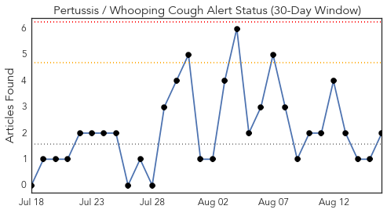
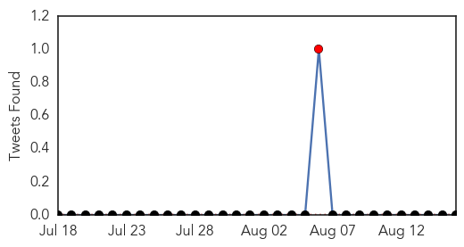
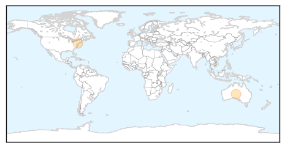
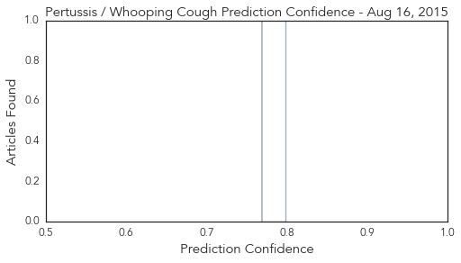

Toggle navigation
Early Warning
Daily Alerts
Pertussis / Whooping Cough
Aug 16, 2015
Compare to:
-
Dengue Fever
Hemmorhagic Fever
Mold/Fungal Infection
Influenza
Meningitis
Middle East Respiratory Syndrome
Cholera
Hepatitis
Chikungunya
Yellow Fever
Bubonic Plague
West Nile Virus
Swine Flu
Ebola
Measles
Unknown
Mumps
30 Day Trends
Web: 0
alerts
, 0
warnings
Twitter: 1
alerts
, 0
warnings
Top Articles:
0.800
Secret report exposes infection concerns at Perth’s Fiona Stanley Hospital
0.768
Living Well – Questions about Vaccinations?
Top Tweets:
No tweets found for Aug 16, 2015
Web/News Articles

Tweets

Article Locations

Article Confidences
